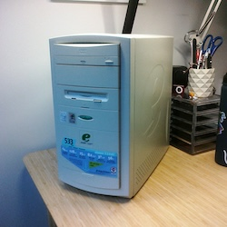

eMachines eTower 533id2
Status + specifications
Status: Running Windows 2000 Server SP4
- Model year: 1999(?)
- 11.3 SVGA LCD (800x600)
- RAM: 256MB
- Disk: 4.3GB IDE HDD
- 533MHz Intel Celeron
- DVD-ROM drive
- Floppy drive
- Linksys EtherFast PCI Adapter (10/100 with Wake-On-LAN)
Resources
- eTower 533id2 Restore Disk: I was not able to boot off this when burned to a DVD, but the ISO does have drivers and manuals on it!
Software I'm running
More images